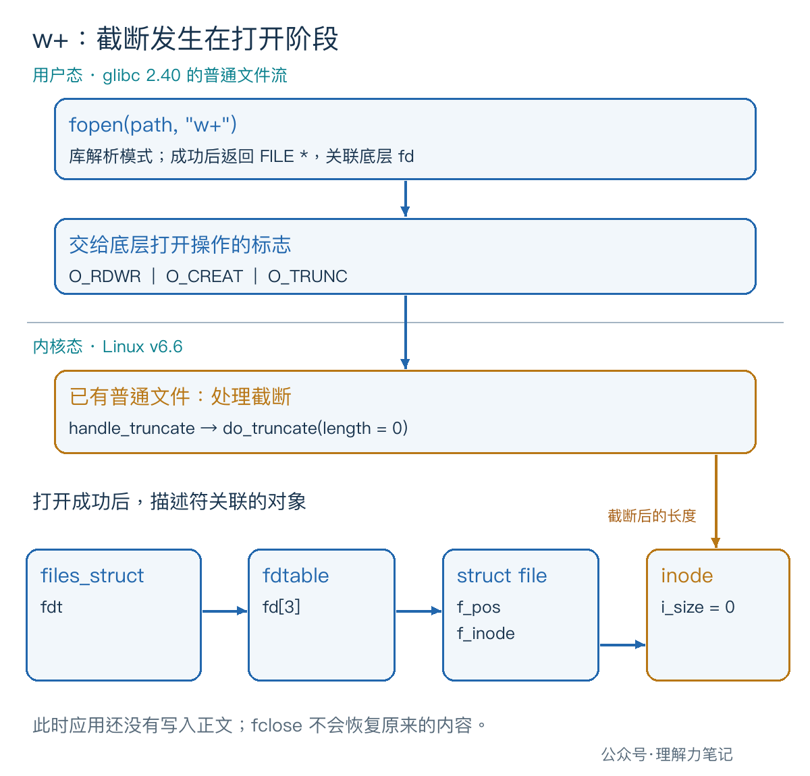

一个文件里原本写着 OLD。程序只是用 fopen 打开它，还没执行写入，文件长度就变成了 0。问题可能出在模式字符串里的那个 w。
对已存在且成功打开的普通文件，
w和w+都会在打开阶段把长度截为 0。 想读写原内容，用r+；想把内容接到末尾，用a或a+。+表示可以读写，不会取消首字母规定的截断或追加行为。
“截断为 0”就是把文件的逻辑长度清零，原内容无法再通过普通文件读取取得。选模式前，先明确是否允许丢弃这些内容。
这篇文章怎么读？
| 你是谁 | 看哪一章 | 会得到什么 |
|---|---|---|
| 搜索者 / 被推荐者 | 第一章 · 先解决问题 | 六种模式对照表和打开即清空的实测 |
| 学习者 | 第二章 · 机制解释 | 从模式字符串找到截断、创建和追加的来源 |
| 编程者 | 第三章 · 工程使用 | 区分保留、覆盖、追加和只许新建 |
| 求职者 | 第四章 · 面试提炼 | 回答 +、b 和 a+ 的常见追问 |
下表针对普通文件，假设路径有效、权限允许。创建只针对最后一级文件名，fopen 不会替你建立缺失的父目录。
| 模式 | 允许操作 | 文件已存在 | 文件不存在 | 写入位置 |
|---|---|---|---|---|
r |
读 | 保留内容 | 失败 | 不允许写 |
r+ |
读、写 | 保留内容 | 失败 | 当前流位置 |
w |
写 | 截断为 0 | 创建 | 当前流位置 |
w+ |
读、写 | 截断为 0 | 创建 | 当前流位置 |
a |
写 | 保留内容 | 创建 | 当时的文件末尾 |
a+ |
读、写 | 保留内容 | 创建 | 当时的文件末尾 |
r、w、a 决定打开策略；加上 +，才允许在同一个流上既读又写。比如 w+ 适合从空内容开始读写，不能用它保留原文件。
下面的探针先调用 fopen，紧接着用 fstat 查询文件长度并打印。没有可选的 text 参数时，它不会向目标文件写入任何内容；这个参数留给后面的可写模式实验。
请新建一个空实验目录，把代码保存为 mode_probe.c，只使用目录里的测试文件：
fileno 取出流关联的 fd，fstat 查询该 fd 对应文件的元数据，st_size 是长度。打印发生在可选写入之前，因此 opened_size=0 能区分“打开时截断”和“后续写入改变内容”。这两个查询接口属于 POSIX，fopen 本身是 C 标准库接口。
这里检查普通文件的代码在 fopen 之后执行，它只是限定实验对象，不能撤销此前的截断，更不能拿来保护重要文件。
本次实测环境：macOS 14.8.8、x86_64、Apple clang 16.0.0。没有在 Linux 主机实跑；Linux/glibc 的机制另用源码核对。
每轮都重新写入三个字节 OLD，再测试一种模式：
实际输出：
同一份程序还对每种模式测试了独立的、不存在的文件名：r、r+ 都报 fopen: No such file or directory，退出状态为 1；w、w+、a、a+ 都成功创建空文件，退出状态为 0。结果与上表一致。
POSIX 规定了 fopen 模式和底层 open 标志的对应关系。看三种带 + 的模式，就能找到差别：
r+ 对应 O_RDWR：允许读写，没有要求创建或截断。w+ 对应 O_RDWR | O_CREAT | O_TRUNC：允许读写，需要时创建，已有普通文件则截断。a+ 对应 O_RDWR | O_CREAT | O_APPEND：允许读写，需要时创建，写入强制追加。不带 + 时，r 使用只读的 O_RDONLY，w、a 使用只写的 O_WRONLY；创建、截断、追加的标志仍由首字母决定。
glibc 2.40 的 fileops.c 也按这个顺序解析：遇到 w，记下 O_CREAT | O_TRUNC；再遇到 +，把访问方式改成 O_RDWR。解析 + 的代码没有清除 O_TRUNC。

Linux v6.6 的普通文件打开路径会处理截断请求。在相应分支中，handle_truncate 调用 do_truncate，传入目标长度 0；后者通过文件系统属性更新路径处理这个长度变更。
成功打开后，进程的描述符表关联 struct file，它记录文件偏移量 f_pos，并通过 f_inode 关联 inode。改变的是文件对象的长度，不只是这一次打开的读写位置。 所以关掉流再打开，旧内容也不会恢复。
图中字段属于指定版本的 Linux 实现。用户能依赖的公开语义是：普通文件成功以 w 或 w+ 打开后，原长度已被截为 0。实验观察的也是这个结果，没有跟踪 Linux 内核调用。
追加模式要求后续写入落在当时的文件末尾。它不等于“打开时先定位到末尾，以后就随便写”。即使程序执行过 fseek(fp, 0L, SEEK_SET)，之后的写入仍然追加。
a+ 可以定位后读取已有内容，但不能靠定位把它改成原地覆盖模式。需要从开头读取时，应显式定位并检查结果，不依赖不同平台对 a+ 初始读取位置的安排。
探针带 text 参数时，会先定位到开头，再写入这个字符串。仍然让每轮从 OLD 开始：
实际输出：
r+ 写入一个 X，覆盖了首字节，剩下的 LD 留着。w+ 在打开时已经清空，所以最终只有 X。a+ 保留 OLD，并把 X 接在末尾。
如果用 r+ 把一段长内容改成较短内容，尾部不会因为你少写了几个字节就自动消失。程序必须另外决定如何处理这段尾部；“不在打开时截断”与“整份内容替换”是两个需求。
导出文件如果要求“同名文件已经存在就拒绝”，可以在目标 C 库支持时使用 wx。x 指定独占创建：已有文件时失败，没有时创建；在 POSIX 下对应加入 O_EXCL。
本次测试中，wx 打开已有 sample.txt 报 fopen: File exists，退出状态为 1，原来的 OLD 保持不变；用它创建新文件并写入 X 则成功。
不要先用 access 或 stat 判断不存在，再用 w 打开。检查和打开之间，其他进程可能创建同名文件。O_CREAT | O_EXCL 把存在性检查和创建合在一个操作里。这个保证针对创建冲突，不代表给后续读写加了互斥锁。
同样，r+ 打开失败时，不要直接退回 w+。失败可能来自权限、路径或资源不足；即使第一次确实因为文件不存在，第二次打开前也可能出现新文件。选择失败后的行为，需要继续遵守“不覆盖已有内容”的业务要求。
示例在 fopen 失败后立即报告错误；取得流后，查询、定位或写入失败都走同一个清理出口。fputs 返回 EOF 表示失败，fclose 的返回值也单独检查，因为缓冲中的数据可能在关闭时才提交。
验收时还把测试子进程允许写出的文件大小限制为 0：目标文件可以打开，但最终报告 fclose: File too large，程序以失败状态退出。打开成功不能代替整次输出成功；关闭失败后也不能再次使用该流或重试 fclose。
这里是单线程、普通文件实验，发生错误就报告并退出，没有实现信号中断恢复或并发写入协议。a 保证追加位置，不保证一次标准 I/O 调用形成完整、不可交错的业务记录，也不保证数据已持久化。
r+ 与 w+ 都能读写，区别在哪？ 前者要求文件存在，打开时保留内容；后者可以创建文件，但已有普通文件会被截断为 0。
wb 比 w 更安全吗？ b 表示二进制模式，在 Linux 等 POSIX 系统中不改变这里的打开行为，wb 仍然截断。跨平台处理二进制数据时有必要明确 b，但它不是防覆盖选项。
加了 +，就能任意交替读写吗？ 不能。更新流仍有读写切换规则：通常从读切到写需要定位操作，从写切到读需要刷新或定位操作，另有读到 EOF 的例外。本篇的写入实验没有交替读写，具体切换规则留到后续专篇。
b、x 和更新流边界。O_CREAT、O_TRUNC、O_APPEND、O_EXCL 及原子创建条件。_IO_new_file_fopen 的模式解析与 _IO_file_open。a+ 初始读取位置的平台差异和二进制标记的说明。本文为公众号「理解力笔记」原创。转载请联系作者，并保留出处。